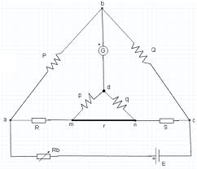

Resistance is an important element in an electrical or electronic circuit. There are three types of resistances according to their magnitude.These are:
- Low resistance
- Medium resistance
- High resistance
Different methods are used in measurement of these various resistances. Low resistances includes all the resistances whose value is of the order of 1 ohm or below that. There are 3 different methods which are used in measuring low reistances .Kelvin double bridge method is one of them. Others are - Ammeter-voltmeter method and Potentiometer method. Now we will discuss Kelvin bridge .
Kelvin Double Bridge Method : It is the modification of the wheatstone bridge and provides increased accuracy. It incorporates the idea of second set of ratio arms, hence the double bridge. Four terminal resistances are used here.
Here R = Unknown resistance
S = Standard resistance of the order of magnitude R
r = Connecting link of low resistance
P, Q and p, q are two pairs of known non inductive resistances and one pair P, p or Q, q is variable. The ration p/q is made equal to P/Q. Under balanced condition there is no current through the galvanometer.
We can state that, Ead = Eamc
Since Ead = P / (P + Q) x Eab , Eab = I [R + S + (p+q) r / p+q+r ]
and Eamc = I [R+ p /p+q {( p+q) r/p+q+r} ] = I [ R+ pr /p+q+r ]
At balance condition, Ead = Eamc
P / (P + Q) I [R + S + (p+q) r / p+q+r ] = I [ R+ pr /p+q+r ]
or, R = P/Q X S + qr / (p+q+r) [P/Q - p/q]
Now if P/Q =p/q
Unknown resistance R = P/Q × S
 by
by {kind=link}